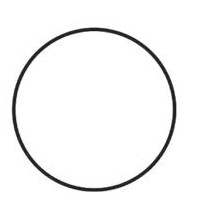
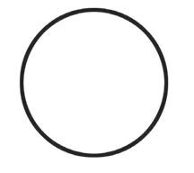

Similarly, texture and shadow in drawing can affect the balance of an image, as shown in Figures 25 and 26. Figure 25 shows how the heavy shadow on the lower part of the left shape causes the balance of the image to lean on that side.


Figure 26 shows the texture created by light shadows and how it affects the balance of the image.



Activity 14
Examine and write the types of textures seen in various objects in your classroom.
Activity 15
Use reliable online or other sources to collect five images drawn using a pencil. Then, explain the type of texture used.